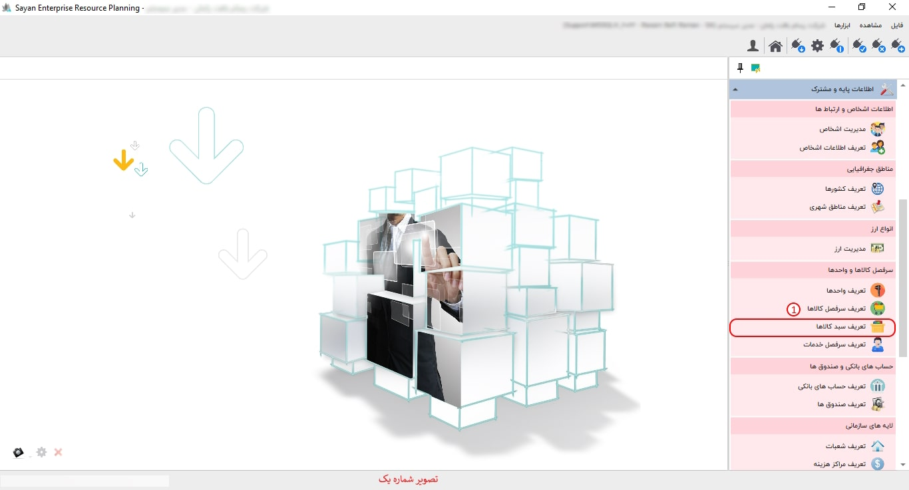
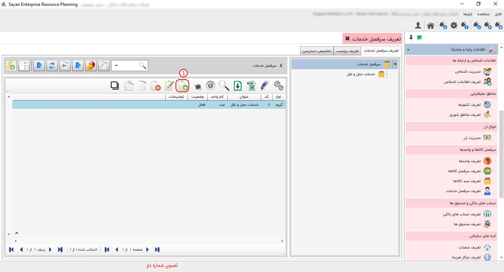
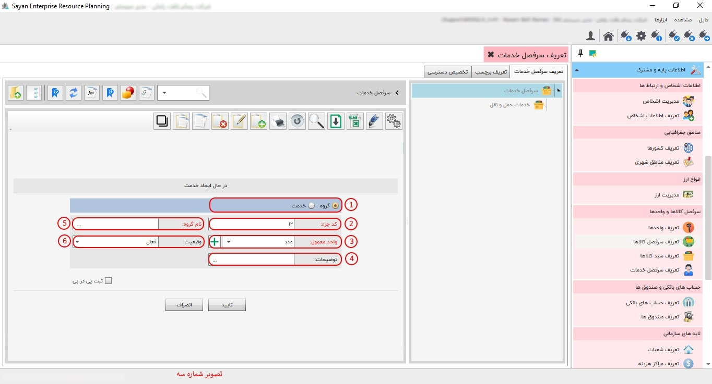
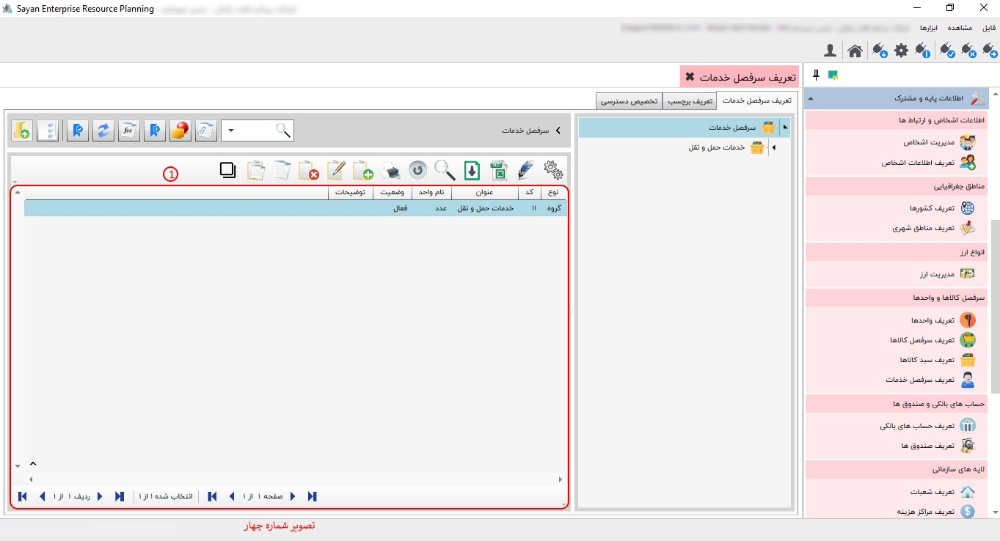
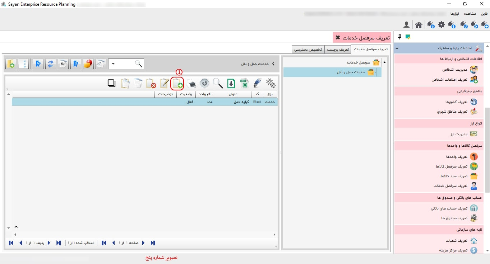
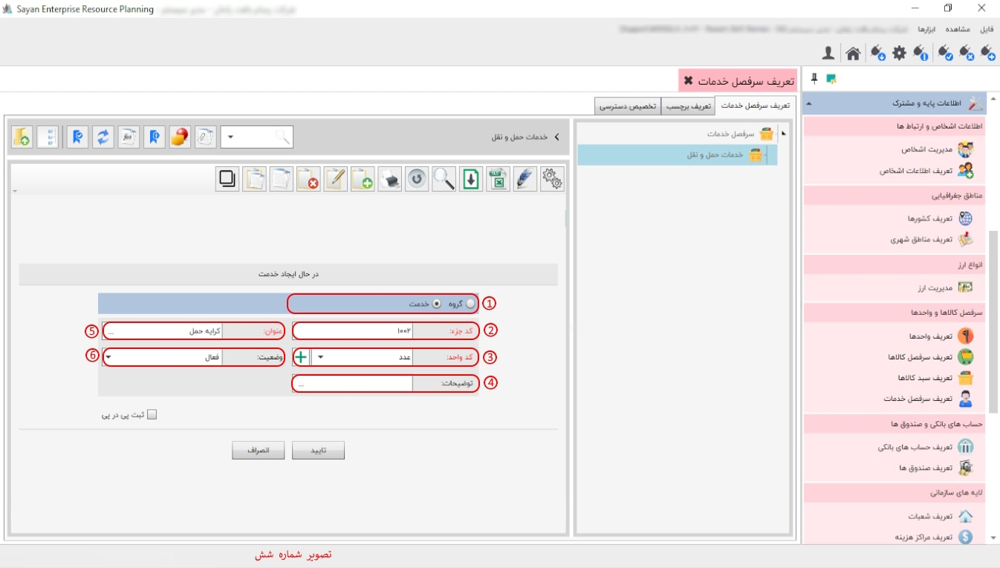
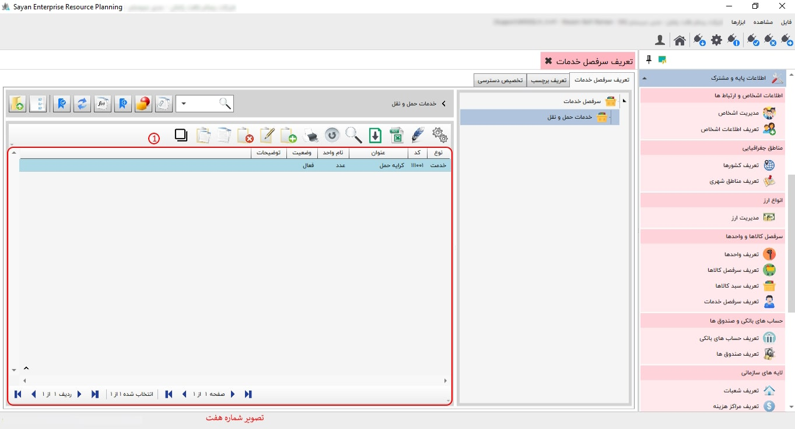

در این بخش، شما میتوانید سر فصل خدمت مورد نیاز خود را با توجه به گروهبندی تعیین شده ایجاد کنید.
برای ادامه مطلب به تصویر شماره دو مراجعه نمایید.
کادر شماره یک: برای ایجاد گروه، میتوانید از این آیکون استفاده نمایید.
برای ادامه مطلب به تصویر شماره سه مراجعه نمایید.
-کادر شماره یک: در این قسمت، می بایست گزینهی گروه را انتخاب کنید.
-کد جزء(کادر شماره دو): کد بهطور پیشفرض برای شما تنظیم میشود؛ در صورت نیاز، میتوانید آن را تغییر دهید.
-واحد معمول (کادر شماره سه):
-توضیحات (کادر شماره چهار): در صورت نیاز به توضیحات، میتوانید توضیحات موردنظر خود را وارد کنید.
-نام گروه (کادر شماره پنج): نام گروه موردنظر خود را وارد نمایید.
-وضعیت(کادر شماره شش): وضعیت فعال یا غیرفعال بودن خود را وارد نمایید.
برای ادامه مطلب به تصویر شماره چهار مراجعه نمایید.
-کادر شماره یک: در این قسمت، تمامی گروههایی که تعریف کردهاید را میتوانید مشاهده کنید.
برای ادامه مطلب به تصویر شماره پنج مراجعه نمایید.
-کادر شماره یک: برای ایجاد خدمت، میتوانید از این آیکون استفاده نمایید.
برای ادامه مطلب به تصویر شماره شش مراجعه نمایید.
-کادر شماره یک : در این بخش، ابتدا باید روی گزینه خدمت کلیک نمایید.
-کد جزء(کادر شماره دو): در این بخش، کد بهصورت پیشفرض برای شما ایجاد میشود. به همین دلیل، نیازی به تغییر در کد نیست.
-کدواحد(کادر شماره سه):
-توضیحات(کادر شماره چهار): در این قسمت، در صورت نیاز، میتوانید توضیحات مورد نیاز خود را وارد نمایید.
-عنوان(کادر شماره پنج): در این بخش عنوان خدمت مورد نظر خود را وارد نمایید.
-وضعیت(کادر شماره شش): در این قسمت، میبایست وضعیت فعال یا غیرفعال بودن خود را انتخاب نمایید.
برای ادامه مطلب به تصویر شماره هفت مراجعه نمایید.
-کادر شماره یک: در این قسمت، تمامی سبدهای ایجاد شده خود را میتوانید مشاهده کرده و در صورت نیاز، آنها را ویرایش نمایید.